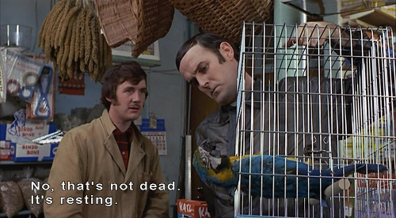
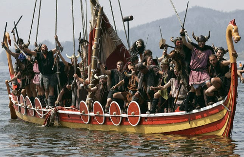
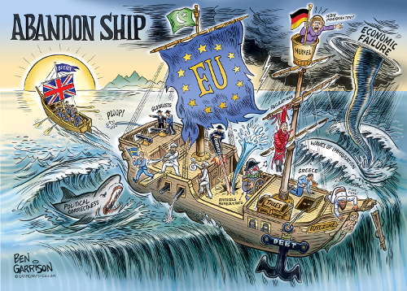

All aboard the great ship Britannia
Project Fear Fantasies (again)
On the leave side of the EU referendum campaign, it was always clear that no peaceful and law-abiding EU citizen living and working in the UK was going to be sent home. Absolutely no one on the Leave side advocated it. It is a dead parrot.
The Remain campaign however was busy fighting their own straw men instead of what the Leave side was advocating, which is one reason why they lost. People could see their parrots were dead.
One of the Remain campaign’s apocalyptic fantasies was that Brexit would lead to a mass deportation of EU nationals and so the public services and private sector businesses would collapse having lost millions of nurses and other workers in one day.
We are all the heathens
The Great Heathen Army after being defeated by Alfred the Great were not put back into their Viking longboats, it was not practical, and they are still here. They became a big part of what we now call Northerners.
The Irish Republic began over a century ago, yet still not a single right has been removed. Any Irish citizen living here in the UK has always had a pretty full set of rights which have nothing to do with the EU. The British people are generous, they do not hold grudges against Irish people or Danes.
Rather more recently, it cost tens of millions to remove Two (2) Islamist hate preachers. Not two thousand, two hundred, just two.
Without any national register of citizens or identity cards, the fact that the British state has absolutely no way to even know who is here, let alone have any means to do any mass deportations.
3 guys claiming to be 3 million guys
I thought this nonsense died with the remain campaign but no it is still going. I came across a pressure group self named the3million [sic], quite a presumptuous name. Not a scientific sample by any means but the EU citizens that I ran across in my daily life had never heard of it.
It is also quite an assumption that all of the EU citizens in the UK share the same set of views. Not least because in most EU countries, support for the EU barely gets to 50%, and in many cases is much lower.
The idea that the 3 million EU citizens have the same views on Brexit is as preposterous as imagining they all wake up and sing Ode to Joy every morning.
EU citizens are not uniform
As I listen to British resident EU-citizens about Brexit, they have very different opinions, often related to why they chose to come to the UK in the first place. I am putting them into three groups.
The UK joined the EU 18 years late in 1973 and was so unenthusiastic that it had its first leaving referendum in 1975. The UK has had a Eurosceptic Majority since they started recording these things in 1992 (and perhaps all along). The UK refused to join many of the main EU programs like the Euro, the Schengen Area and countless others.
However, according to the3million campaign there are apparently people that somehow moved to the UK without knowing any of this or somehow being in denial or in a complete information-free bubble.
Therefore the first group I am calling the Shocked and appalled group. They feel they came to the UK under a certain set of conditions (EU membership) and the goal posts have been moved. However, not seriously enough they want to actually move back to the EU.
It suits the establishment not to make these people at ease, to have a victim class that they can wind up like clockwork mice and point in the right direction when necessary. These are the tearful ones used in BBC vox pops and those holding up signs on the3million website.
The second group is your unpretentious honest hard-working Economic migrant - they don’t care about the long-run politics of it as they are just here temporarily for the money until they can build their own mansion in the Eastern European countryside. (Though sometimes they go native and end up in the third group below).
They are chilled (or even happy) about Brexit because (a) they already got in the door and (b) any controls on future migrants means they can increase the cost of their manual/practical skills that native British workers are not likely to acquire any time soon due to the lack of technical educational in this country.
The final group is the Gone-native group. They came because they were Libertarian-minded and liked British culture. They can do a fairly decent John Cleese impression. They were expecting Brexit to come sooner or later and as long as they don’t fill have to fill out too many forms (because they have gone native and now like most British people, they hate forms), are generally chilled. They would have applied for citizenship but cannot be arsed, because it is another load of endless forms.
What we don’t see is a massive wave of EU migrants emigrating out of the UK. Applications for National Insurance numbers by EU immigrants are still at record rates and still rising. This is not North Korea, people can leave at any time. However, they are voting with their feet to stay.
However much moaning might happen on Facebook, they have chosen with their homes and pocketbooks, to stay on the good ship Britannia and go with us on our new global journey.
So it is only right that our Prime Minister has made a very generous offer that EU citizens living and working here can receive the same benefits as the British population under the same law.
What is not acceptable is using the status of EU nationals as a means to keep the UK in the EU by the back door. That is not what people voted for.